От ручного оконтуривания разведочных сетей до геостатистических методов на основе Conditional Simulation — обзор подходов к классификации Measured / Indicated / Inferred, которые предлагает Datamine.
Программное обеспечение Datamine — профессиональный комплекс решений для горнодобывающей промышленности и геологоразведки: трёхмерное моделирование месторождений, подсчёт запасов полезных ископаемых, проектирование и планирование горных работ. Сегодня Datamine — один из лидеров среди ПО для горнодобывающих компаний, в том числе для оценки минеральных ресурсов и рудных запасов.
JORC — Объединённый комитет по рудным запасам Австралазии (Joint Ore Reserves Committee). Австралазиатский кодекс отчётности о результатах разведки, минеральных ресурсах и запасах руды («Кодекс JORC») устанавливает минимальные стандарты, рекомендации и принципы публичной отчётности о результатах разведки, минеральных ресурсах и запасах руды в Австралазии. Комитет был учреждён в 1971 году, первое издание Кодекса опубликовано в 1989 году; переработанные издания выходили в 1992, 1996, 1999 и 2004 годах, действующее издание 2012 года замещает все предыдущие.
Кодекс принят Австралазиатским институтом горного дела и металлургии (AusIMM) и Австралийским институтом геологов и геофизиков (AIG), обязателен для членов этих организаций и включён в правила листинга Австралийской биржи ценных бумаг (ASX) и Новозеландской фондовой биржи (NZX). Сегодня JORC — общепризнанный в мире стандарт публичной отчётности, принимаемый на большинстве бирж.
Причина создания Кодекса — экономические потери инвесторов из-за использования некачественной, иногда сфальсифицированной отчётности о геологических запасах. Его цель — обеспечить приемлемый уровень достоверности отчётности для инвестирования в разработку месторождений твёрдых полезных ископаемых.
Основная цель Кодекса JORC: подготовка достоверной публичной отчётности о результатах разведки, минеральных ресурсах и запасах руды, не содержащей искажений, которые могут повлиять на мнение инвесторов и оценку месторождения. Ключевое слово — достоверность.
Достоверность оценки определяется двумя факторами:
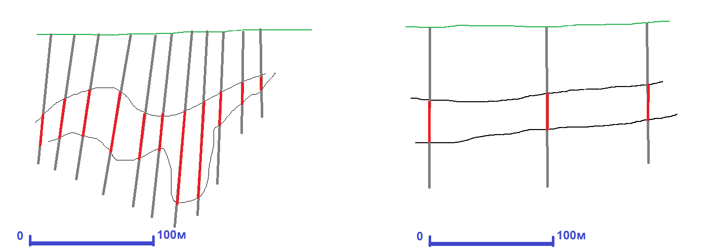
Степень достоверности оценки и категория по Кодексу JORC у обоих месторождений будет одинакова — Measured (оба разведаны настолько, что бурение дополнительных скважин не даст существенной новой информации), но для сложного месторождения это достигнуто гораздо более детальной разведочной сетью.
Классический классификационный признак достоверности оценки геологических запасов — соотношение сложности месторождения и плотности (шага) разведочной сети. Пример — рекомендации ГКЗ о том, какая разведочная сеть нужна для какой категории запасов при заданной категории сложности месторождения. В Кодексе JORC формальных рекомендаций нет, тот же принцип применяется через профессиональное суждение Компетентного Лица.
Идеальная метрика достоверности — погрешность оценки минеральных ресурсов. Она требует привлечения более сложных математических инструментов и сейчас является наиболее передовой практикой классификации по Кодексу JORC.
Datamine предоставляет широкий набор инструментов для классификации минеральных ресурсов по кодексу JORC:
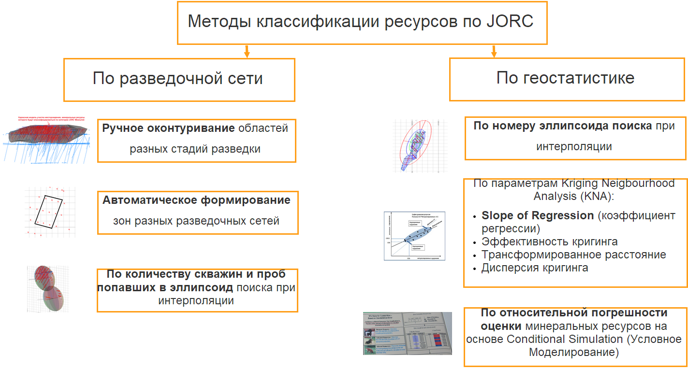
Методы по разведочной сети всё так же популярны, но обычно используют функции ГГИС — например, подход с количеством скважин и проб, попавших в эллипсоид поиска при интерполяции. Из геостатистических подходов наиболее распространена классификация по Slope of Regression, рассчитанному по KNA (Kriging Neighbourhood Analysis). Менее распространён, но наиболее перспективен метод на основе расчёта относительной погрешности — он применяется, например, на руднике Куяба (Бразилия). Способ компенсировать недостатки разных подходов — их сопоставление и комбинирование для итоговой классификации по Кодексу JORC.
Обычно эксплуатационная разведка обеспечивает класс Measured, детальная разведка — класс Indicated, более ранние стадии разведки — класс Inferred. Это не всегда так, но к этому обычно стремятся.
Альтернативный геостатистический подход к определению разведочных сетей для классификации по JORC: расстояние между буровыми профилями 1/2–2/3 зоны влияния вариограммы соответствует классу Measured (наиболее высокая точность оценки содержаний в окрестных ячейках); расстояние, равное зоне влияния вариограммы, — классу Indicated (удовлетворительная точность); если расстояние больше, сеть регулярна и «так решил геолог» — классу Inferred (наименьший уровень достоверности).
Так или иначе, для каждого класса минеральных ресурсов по JORC (Measured, Indicated, Inferred) определяются разведочные сети, области разведки по этим сетям оконтуриваются вручную, строятся их каркасные модели, и ячейки внутри этих моделей получают соответствующий класс минеральных ресурсов.
Строим каркасы области эксплуатационной разведки: сперва по нескольким разрезам крутим стринги, потом линкуем их в замкнутый каркас. Делаем стринги — контура вокруг скважин и горных выработок.
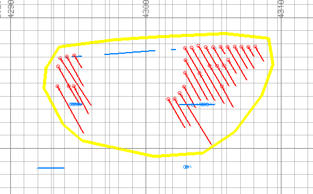
По контурам зон эксплуатационной разведки строим каркасные модели, по которым кодируем в блочной модели ячейки кодом класса Measured.
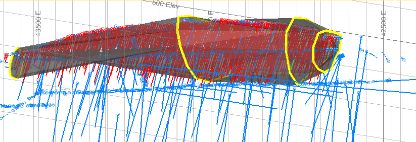
Аналогично строим каркасную модель для области разведочной сети детальной разведки (класс Indicated) и более ранних стадий разведки и оценочных работ (класс Inferred). В результате каждая ячейка блочной модели получает класс минеральных ресурсов согласно кодексу JORC:
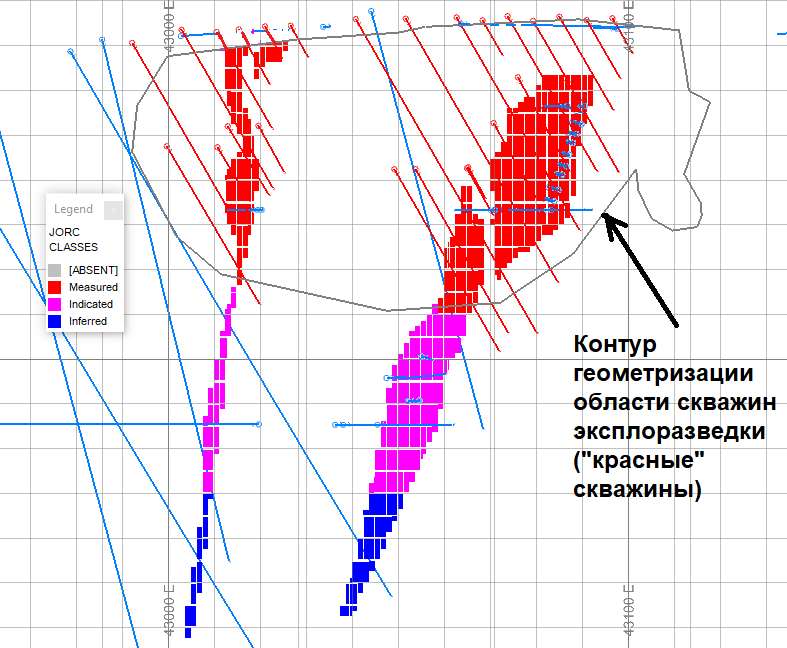
Процесс распознавания разных разведочных сетей можно автоматизировать с использованием процесса ESTIMATE и специально настроенных параллелепипедов поиска. Основная идея: параллелепипед для конкретной разведочной сети должен иметь стороны, более чем в два раза превышающие расстояние между скважинами в соответствующем направлении.
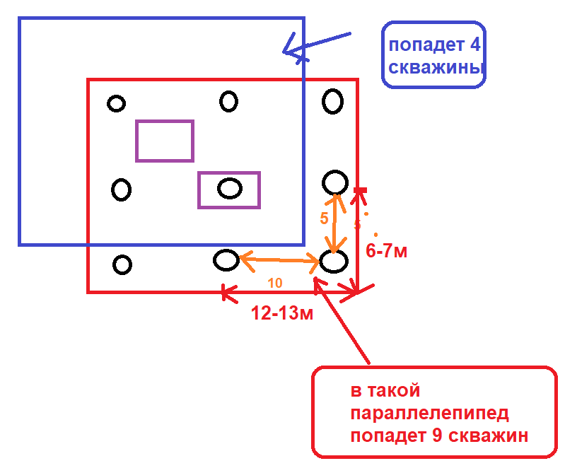
В параллелепипед попадает от 4 до 9 скважин/выработок данной разведочной сети. В процессе интерполяции считается число скважин, попавших в параллелепипед: если не менее четырёх — это целевая разведочная сеть или более плотная. Это позволяет для каждой ячейки определить, какая разведочная сеть в её окрестности, без ручной отрисовки зон, автоматически.
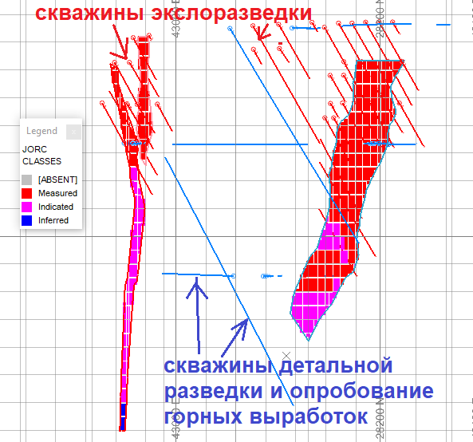
Количество скважин и проб, попавших в эллипсоид при интерполяции, также даёт информацию о достоверности оценки содержаний в ячейках блочной модели и часто используется как критерий классификации по кодексу JORC.
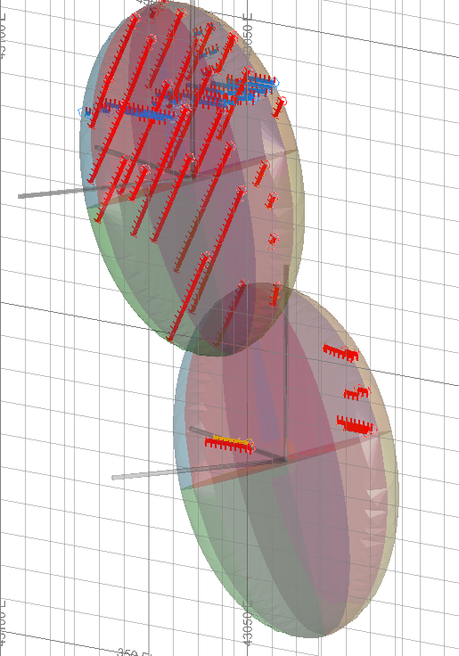
Пример обоснованных Компетентной Персоной правил классификации по кодексу JORC:
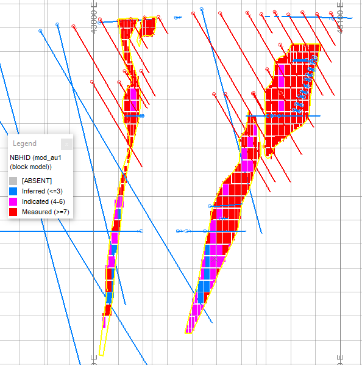
В Datamine можно использовать три эллипсоида поиска:
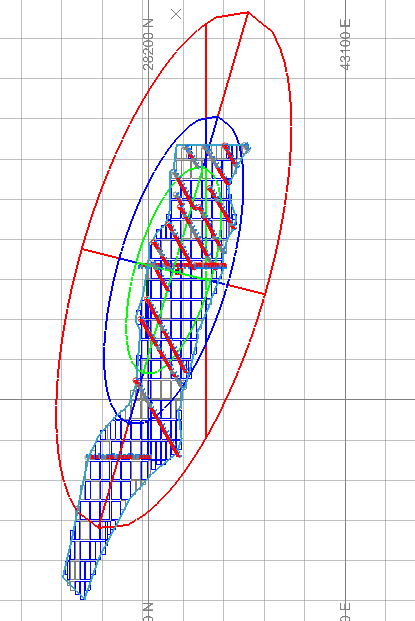
Основной параметр KNA для классификации по кодексу JORC — Slope of Regression, коэффициент регрессионного уравнения между исходными содержаниями в пробах и интерполированными значениями.
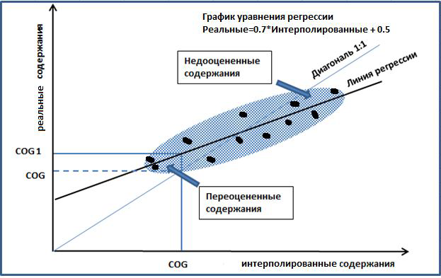
Методы линейной интерполяции содержаний основаны на формуле среднего взвешенного для проб, попавших в поисковый объём. Из-за этого наблюдается эффект завышения содержаний для бедных руд и занижения для богатых: в окрестности бедных руд есть руды с более высокими содержаниями (завышение при интерполяции), а в окрестности богатых руд — руды с более низкими содержаниями (занижение).
Коэффициент регрессионного уравнения между реальными и интерполированными содержаниями равен тангенсу угла наклона линии регрессии — отсюда термин Slope of Regression (или Line of Regression). Этот параметр можно рассчитать в Datamine при интерполяции.
При отсутствии искажения содержаний при интерполяции Slope of Regression равен 1 (угол линии регрессии 45°). При искажении содержаний коэффициент меньше единицы — и чем он меньше, тем выше степень искажения. Существенные искажения приводят к серьёзным ошибкам в горном проектировании выемочных единиц: блочная модель покажет высокие содержания на участках бедной руды, а участки богатой руды небольшой мощности могут перейти в разряд рядовой или бедной руды.
Пример классификации минеральных ресурсов по Slope of Regression (границы параметра для классификации определены Компетентной Персоной):
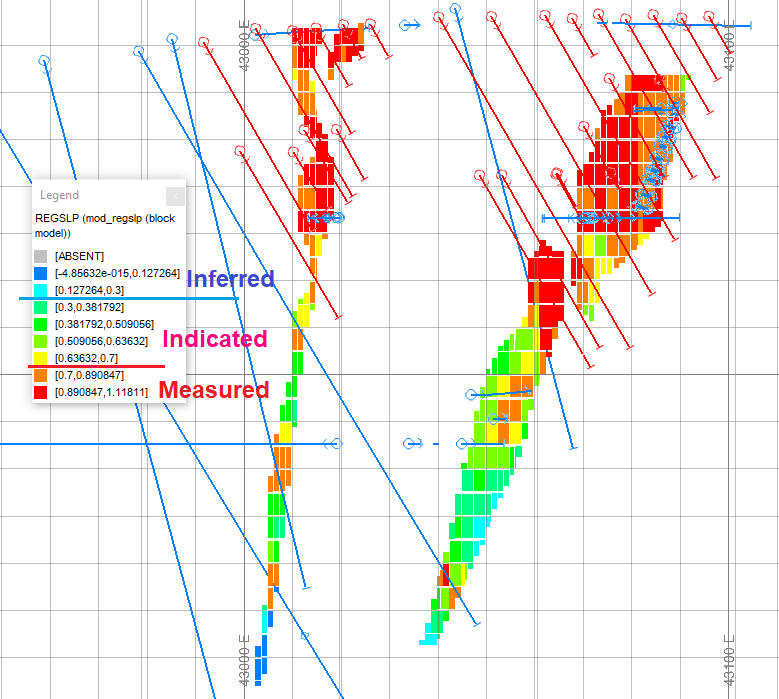
Содержание в любой ячейке и минеральные ресурсы любого участка месторождения подсчитываются с определённой погрешностью. Фактически погрешность оценки минеральных ресурсов и является лучшей метрикой их достоверности и основой классификации по кодексу JORC.
Погрешность оценки — по ячейке, выемочной единице, рудной залежи, месторождению в целом или любому локальному объёму — можно оценить с помощью геостатистического стохастического Условного Моделирования (Conditional Simulation, CS). Идея: в каждой ячейке блочной модели генерируются случайные содержания согласно дисперсии кригинга. Методом последовательного гауссова моделирования на основе Монте-Карло случайным образом генерируется набор (обычно от 21 до 101) эквивалентных по достоверности блочных моделей, отображающих возможную вариацию истинного распределения минерализации.
Для любого объёма мы получаем от 21 до 101 варианта оценки минеральных ресурсов, по которым можно посчитать погрешность оценки и использовать её как классификационный критерий категорий МР по Кодексу JORC — Measured, Indicated, Inferred (чем меньше относительная погрешность, тем выше категория), а также для расчётов относительной погрешности МР согласно положениям Кодекса JORC. Исходя из погрешности минеральных ресурсов можно оценить и погрешность ключевых экономических показателей проекта: NPV, IRR, чистую прибыль и другие.
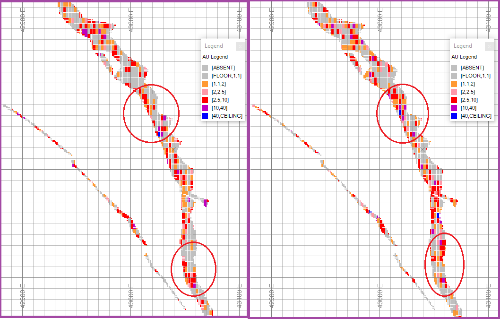
Данный подход используется на бразильском руднике Куяба для классификации минеральных ресурсов по кодексу JORC на базе погрешностей оценки минеральных ресурсов для квартальных и годовых объёмов добычи:
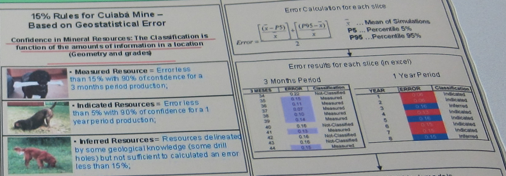
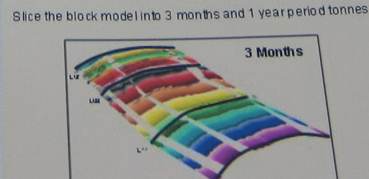
Пример классификации данным методом для рассматриваемого кейса:
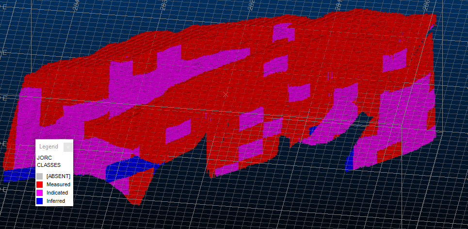
Вывод: методы по разведочной сети и геостатистические методы не исключают друг друга, а дополняют. Современная практика — сопоставление и комбинирование подходов: формальные критерии (сеть, эллипсоиды поиска, Slope of Regression) дают быструю и понятную базовую классификацию, а расчёт относительной погрешности через Conditional Simulation — наиболее строгое и количественно обоснованное подтверждение категорий Measured / Indicated / Inferred по Кодексу JORC.
Загрузите CSV опробования в 3D-песочницу — система автоматически покажет категории Indicated/Inferred на основе плотности данных и стандарта JORC. Экспортируйте отчёт в формате, близком к JORC.